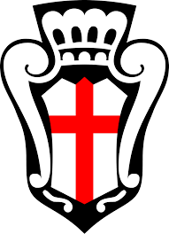

Pro Vercelli

Il Football Club Pro Vercelli 1892, meglio noto come Pro Vercelli, è una società calcistica italiana con sede nella città di Vercelli. Milita in Serie C, la terza divisione del campionato italiano.
Fondata nel 1903 come sezione calcistica della Società Ginnastica Pro Vercelli[3], nata nel 1887 e affiliata alla Federazione Ginnastica d'Italia l'11 luglio 1892, è uno dei club più antichi d'Italia e anche uno dei più titolati, avendo vinto sette scudetti tra il 1908 e il 1922. Conta inoltre 6 partecipazioni alla Serie A a girone unico (tra il 1929 e il 1935) e 13 alla Serie B.
Tra le squadre italiane pluriscudettate, la Pro Vercelli è l'unico sodalizio espressione di una città non capoluogo di regione ed è stata l'unica rappresentante di una città non capoluogo di provincia (all'epoca delle vittorie Vercelli si trovava nella provincia di Novara). Lo scudetto conquistato nel 1908 la rende inoltre una delle due società calcistiche italiane (insieme alla Novese) vincitrice di un titolo nazionale in qualità di neopromossa in massima divisione.
La società ha conosciuto diverse rifondazioni, da ultimo nel 2010, allorché il sodalizio concittadino Associazione Sportiva Pro Belvedere Vercelli ha ottenuto in concessione il marchio storico e si è dichiarato prosecutore de facto della tradizione sportiva della disciolta Unione Sportiva Pro Vercelli.
Vanta la 61ª miglior tradizione sportiva in Italia.